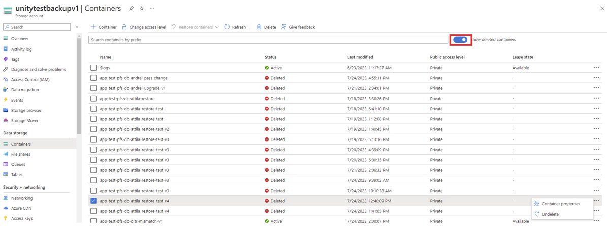
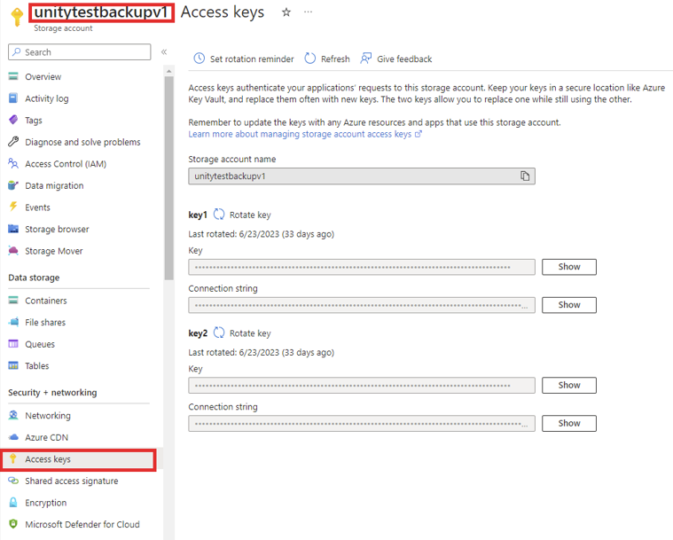
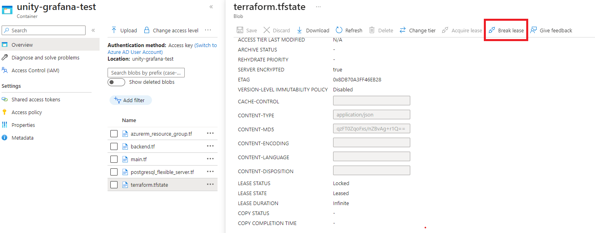
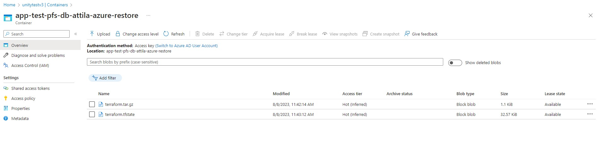

Table of Contents
Database Incident Recovery
The sections below describe certain incidents related to databases and how to recover from them.
Restore Database Manually
In case a manual restore of the database server is needed (e.g. the server was accidentally deleted) it can be done by following these steps:
- Recreate the azure resources for the database server through the
unity-app.*.yamlwith the exact same configuration. You can get the last configuration from the git history of theunity-app.*.yamlfile. Alternatively you can undelete the container of the database in the azure portal, this should also contain the required configuration(⚠️In this case don’t forget to delete the container again before recreating the resources). - In the backup storage account (azure portal): delete the newly created blob container and undelete the container containing the backup to be restored (⚠️check the last modified timestamps, the names will be the same). 
-
Create a secret with one of the access keys of the backup storage account. This secret will be used to mount the azure file share containing the backup in the container to later restore it.

apiVersion: v1 kind: Secret metadata: name: app-test-pfs-db-foo-storage-account namespace: test stringData: azurestorageaccountname: unitytestbackupv1 # the name of the storage account containing the backups azurestorageaccountkey: unitytestbackupv1_acceskey # one of the access keys to the storage account containing the backups type: Opaque -
Create a job to restore the DB Server. The job has two steps, first the
initContainercopies the backup from the blob container to the azure file share then the backup will be restored into the database server created in the first step.In the following example you can replace all the occurrences of
app-test-pfs-db-foowith your database name. Every credential and certificate required is saved in the keepass repo, or you can run the store-secrets workflow in theunity-terraformrepo to get them. The Service Principle certificate can be encoded inbase64using any linux terminal (e.g. in GitBashcat /path/to/certificate | base64). ️The container image must contain thepsqlwith the postgres version specified in step 1.apiVersion: batch/v1 kind: Job metadata: name: app-test-pfs-db-foo-restore-backup namespace: test labels: unity.bmwgroup.net/restore-database-backup: "app-test-pfs-db-foo" spec: template: spec: initContainers: - args: - -c - echo $AZURE_CLIENT_CERT_PFX_B64 | base64 -d > $AZCOPY_SPA_CERT_PATH; mkdir /backupfileshare/app-test-pfs-db-foo; azcopy copy "https://unitytestbackupv1.blob.core.windows.net/app-test-pfs-db-foo/app-test-pfs-db-foo.tar" /backupfileshare/app-test-pfs-db-foo; command: - sh env: - name: AZCOPY_AUTO_LOGIN_TYPE value: SPN - name: AZCOPY_TENANT_ID value: tenant-id # the azure tenant id - name: AZCOPY_SPA_CERT_PATH value: /tmp/cert.pfx - name: AZCOPY_SPA_APPLICATION_ID value: application-id # the client id of the service principal - name: AZCOPY_LOG_LOCATION value: /tmp - name: AZCOPY_JOB_PLAN_LOCATION value: /tmp - name: AZURE_CLIENT_CERT_PFX_B64 value: client-certificate # the certificate to the SP base64 encoded image: containers.atc-github.azure.cloud.bmw/unity/azcopy:2023-07-04t082112z-52b72fd # the latest azcopy image name: blob-to-fileshare resources: limits: cpu: 500m memory: 512Mi requests: cpu: 200m memory: 256Mi securityContext: allowPrivilegeEscalation: false capabilities: drop: - ALL readOnlyRootFilesystem: false volumeMounts: - mountPath: /backupfileshare name: backupfileshare imagePullSecrets: - name: containers.atc-github.azure.cloud.bmw containers: - args: - -c - | set -eux cd /backupfileshare/db-foo tar -xvmpf db-foo.tar gzip -d -c backup-all.gz > backup-all.out psql -f backup-all.out postgres rm backup-all.gz rm backup-all.out gzip -d -c backup-postgres.gz > backup-postgres.out psql -f backup-postgres.out postgres rm backup-postgres.gz rm backup-postgres.out command: - bash env: - name: PGHOST value: app-test-pfs-db-foo.postgres.database.azure.com - name: PGUSER value: postgres # the postgres admin - name: PGPASSWORD value: password # the admin password image: postgres:14 # the image must contain the required postgres version name: restore resources: limits: cpu: 500m memory: 512Mi requests: cpu: 200m memory: 256Mi securityContext: allowPrivilegeEscalation: false capabilities: drop: - ALL readOnlyRootFilesystem: false volumeMounts: - mountPath: /backupfileshare name: backupfileshare restartPolicy: OnFailure securityContext: runAsNonRoot: true runAsUser: 10000 runAsGroup: 10000 seccompProfile: type: RuntimeDefault volumes: - csi: driver: file.csi.azure.com volumeAttributes: secretName: app-test-pfs-db-foo-storage-account # the name of the secret from step 3 shareName: app-test-pfs-db-foo name: backupfileshare ttlSecondsAfterFinished: 86400⚠️It’s important to add the
unity.bmwgroup.net/restore-database-backuplabel with the proper value (<app-name>-pfs-<database-server-name>), this will prevent the operator to execute any update on the database during the restore process.⚠️Also please note that when trying to restore a large database, it might be necessary to increase the resources (of both the initContainer and the main container).
- After the job is done verify the logs in grafana. It is possible that there are some errors related to database objects managed by azure and/or the default
postgresdatabase, because the postgres admin user is not a superuser, to whom azure does not give access. If there isn’t any error related to the database(s) managed by the application and the restore was successful delete the secret created in step 3.
Fix Terraform Locked State
Sometimes it might happen that all terraform operations fail because of being in a locked state. There are two possibilities to recover from this situation:
-
via the Azure portal UI, the lease can be broken: 
-
by running the Terraform command
force-unlockazcopy login azcopy copy https://unitytestv3.blob.core.windows.net/unity-grafana-test . --recursive cd unity-grafana-test terraform force-unlock <LOCK_ID>
Cleanup Resources When Destroy Is Interrupted
There are cases when the database destroy operation is interrupted for various reasons. The most common reason is when the unity operator is restarted while destroy operation was in progress.
Steps to follow:
- Check to see if the database container is in a locked stated and if its unlock it, see: Fix Terraform Locked State
- If the secret do not exist, add secret of type
postgresql-flexible-server/destroymanually for that database, e.g.:# Make sure you adapt the names accordingly kubectl apply -f - <<EOF apiVersion: v1 kind: Secret metadata: annotations: unity-operator.unity.bmwgroup.net/azure-resource-group-name: app-test unity-operator.unity.bmwgroup.net/disabled: "false" labels: app.kubernetes.io/managed-by: unity app.kubernetes.io/name: app-test-pfs-db-attila-azure-restore-v3-manually-added unity-operator.unity.bmwgroup.net/postgresql-flexible-server-secret-name: app-test-pfs-db-attila-azure-restore-v3 name: app-test-pfs-db-attila-azure-restore-v3-manually-added namespace: test type: postgresql-flexible-server/destroy EOFand if the secret exists, just edit the secret, e.g. add a random label, to trigger the reconciliation loop.
- Checkout unity-operator logs to see if destroy was done with success. If not, delete the secret manually, fix the issue from logs (if you can) and repeat the process
- If you get an error message like:
Job 110449 failed with\nstatus: 500 and message: \"ERROR : A problem occurred. - Failed to perform\n'read' on resource(s) of type 'privateDnsZones/virtualNetworkLinks'just edit the secret again, add a random label to trigger the reconciliation loop again (you might get lucky). This is an error message coming from https://manage.azure.bmw.cloud/. If the job still fails, open an incident to
public-cloud-framework:global - If the above steps did not work, follow Manually Run Terraform Destroy From Local
Manually Run Terraform Destroy From Local
In some cases the automatic destroy fails without being interrupted, for example: When someone creates a new DB server with an invalid configuration (e.g. too early PITR time stamp). Terraform will not be able to create the Server. When trying to delete that DB server, the destroy change request will fail, because the backup job cannot be executed, because there is no fqdn in the terraform output, e.g. error: "could not read outputs: terraform output empty for \"fqdn\"".
Steps to follow:
- Download terraform files from db related container, e.g. 
- Unzip terraform files
- Run
terraform init - Run
terraform destroy
If the above steps do not succeed you should follow Manually Delete Database Resources
Manually Delete Database Resources
When you are in a state where the automatic or semi-automatic ways do not succeed, you will need to delete the resources manually.
To do so, first you need to check if you can see the Private DNS zones and VNETs used by your db server in https://manage.azure.bmw.cloud/ and if you see them, delete them from there, if not delete them from https://portal.azure.com/.
Steps to delete a VNET:
- Identify the VNET from
Azure Database for PostgreSQL flexible serverview resource in https://portal.azure.com/ -> Networking tab -> Virtual network section - Make sure the VNET in question is delegated to
Microsoft.DBforPostgreSQL/flexibleServers. You can see that in VNET view screen from https://portal.azure.com/, Subnets tab - Edit VNET, set Delegation to None.
- Delete the VNET from https://manage.azure.bmw.cloud/ -> Network -> Manage Existing Networks
- If you cannot find the VNET in the above step, delete it directly from https://portal.azure.com/
If the VNET exists in https://manage.azure.bmw.cloud/ but it doesn’t exist in https://portal.azure.com/ you should open an ITSM ticket to public-cloud-framework:global
Steps to delete a Private DNS Zone:
- Identify the Private DNS Zone in https://portal.azure.com/
- Delete all Virtual network links from that Private DNS Zone from https://portal.azure.com/ vew screen
- Delete the Private DNS Zone from https://manage.azure.bmw.cloud/ -> DNS -> Manage Private DNS Zones tab
- If you cannot find the Private DNS Zone in the above step, delete it directly from https://portal.azure.com/
If the Private DNS Zone exists in https://manage.azure.bmw.cloud/ but it doesn’t exist in https://portal.azure.com/ you should open an ITSM ticket to public-cloud-framework:global
The remaining resources will be deleted from https://portal.azure.com/